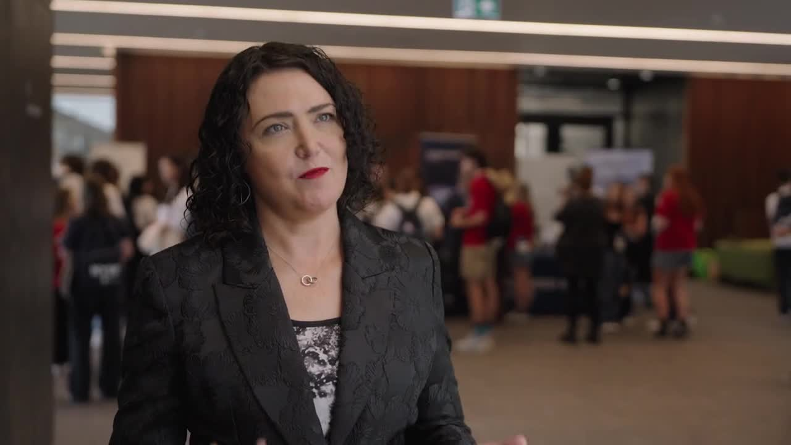

Nine days that can change the course of your future in STEM.
The Year 12 Program is NYSF’s flagship. Over nine days on a university campus you tour science and technology facilities, learn about current research, meet industry partners, explore university and STEM career pathways, and join students from all over Australia. In January 2027 it runs two sessions: the Australian National University in Canberra from 6 to 14 January, and the University of Queensland in Brisbane from 13 to 21 January.
Open to students in Year 11 about to start Year 12, from every background and every part of Australia. Selection is based on curiosity and motivation, not just academic results, and Access and Equity Scholarships mean cost need not be a barrier.
Read more about the application process here.



Non-residential STEM experiences a little closer to home, held throughout the year.
Explore →
Step up as a leader and help run NYSF for the next cohort.
Explore →
Our three-day early-career conference built to equip you with the skills you need to succeed.
Explore →